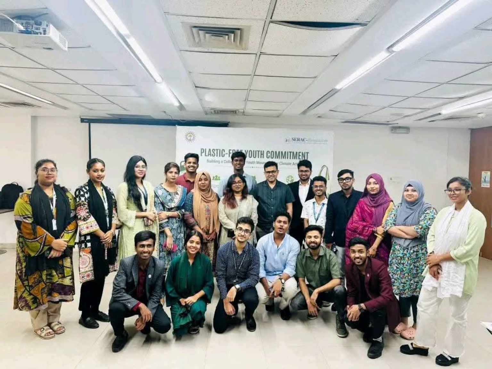
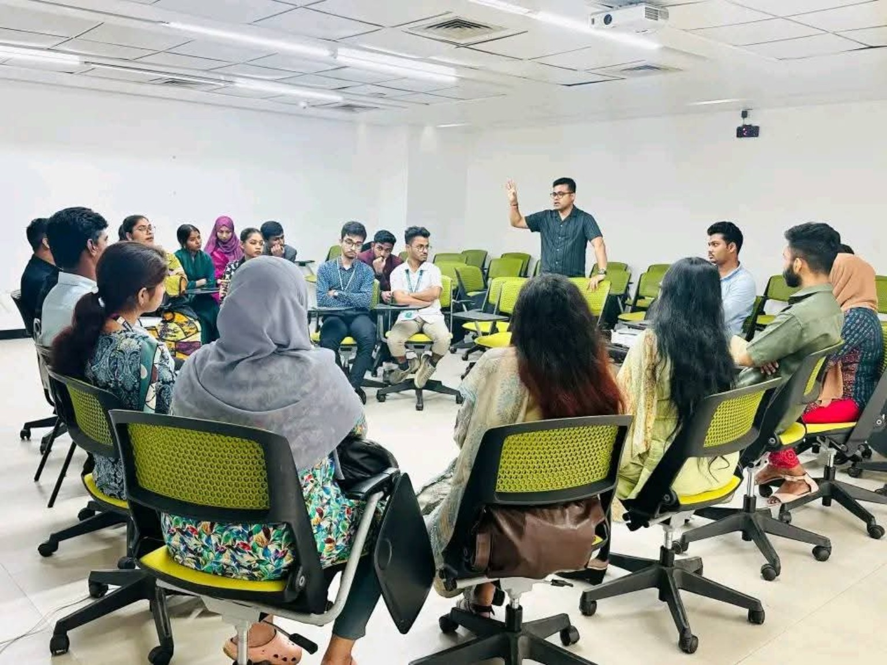
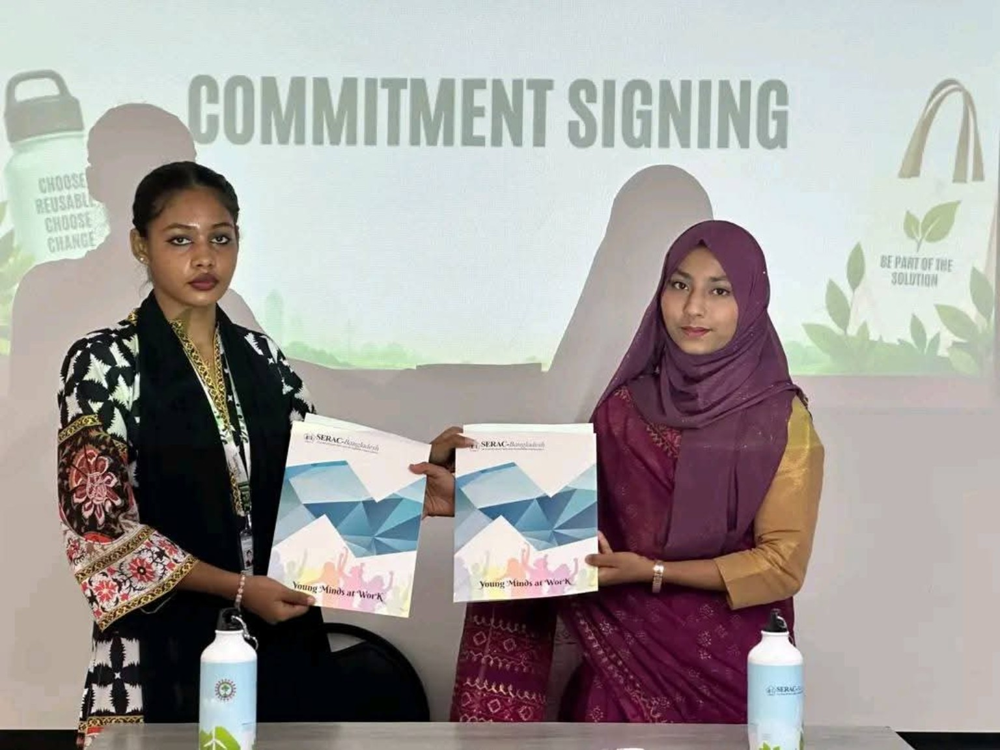

Reduce single-use plastics
Work toward eliminating unnecessary single-use plastic items from organizational activities and everyday practices.
On International Plastic Bag Free Day 2026, Sustainers NEST joined a collective youth commitment to reduce single-use plastics and strengthen zero-waste practices.
Sustainers NEST signed the Plastic-Free & Zero-Waste Commitment as part of a collective youth effort to make climate action part of everyday organizational practice.
The joint initiative was led by the Youth Coalition for Climate Justice (YCCJ) and supported by SERAC-Bangladesh. It brought youth-led organizations together around a shared responsibility to reduce plastic dependence and promote more sustainable practices in their communities.



The commitment turns environmental values into practical organizational choices.
Work toward eliminating unnecessary single-use plastic items from organizational activities and everyday practices.
Plan activities and gatherings with reusable, low-waste alternatives wherever practical.
Encourage responsible consumption, reuse and waste reduction through the organization and its wider community.
Community Development & Strategic Management Coordinator
She represented Sustainers NEST at the roundtable discussion and commitment signing, joining youth-led organizations working toward plastic-free and zero-waste practices.
The activity reflects Sustainers NEST's broader role in climate advocacy, collaboration and institutional responsibility beyond its four core projects.
See institute programs, project activities, milestones and organization-wide advocacy in one place.